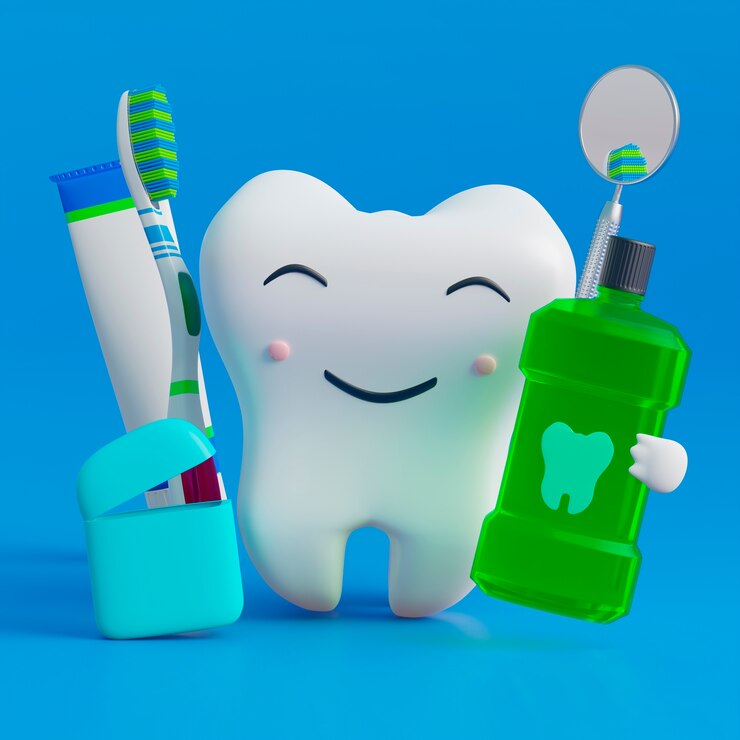

العلاج الكيميائي وصحة فمك: دليل الرعاية والوقاية

أثناء رحلة العلاج من السرطان، قد يبدو الاهتمام بالأسنان أمراً ثانوياً، لكن الحقيقة أن صحة الفم تلعب دوراً حاسماً في نجاح الخطة العلاجية الشاملة وتجنب أي مضاعفات قد تؤخر العلاج الأساسي.
لماذا يحتاج مريض السرطان لعناية خاصة؟
تؤثر العلاجات الإشعاعية والكيميائية على الخلايا سريعة الانقسام، مما قد يؤدي إلى:
- جفاف الفم الشديد: نتيجة تأثر الغدد اللعابية، مما يزيد من خطر التسوس السريع.
- التهابات الأغشية المخاطية: ظهور قروح مؤلمة تجعل الأكل والحديث صعباً.
- خطر نخر العظم (ORN): خاصة بعد العلاج الإشعاعي لمنطقة الرأس والرقبة.
🛡️ بروتوكول الرعاية في مركزنا:
نحن نتبع منهجية علمية دقيقة لضمان سلامتك:
- الفحص قبل العلاج: لإنهاء أي مشاكل سنوية أو التهابات قبل بدء جرعات الكيماوي.
- جلسات الفلورايد المكثفة: لتقوية طبقة المينا وحمايتها من التآكل الناتج عن جفاف الفم.
- بدائل اللعاب الطبية: وصف محاليل خاصة لترطيب الفم ومنع الالتهابات الفطرية.
صحتك هي أولويتنا القصوى
إذا كنت أنت أو أحد أحبائك يخضع للعلاج الكيميائي، فنحن هنا لتقديم الدعم الطبي اللازم وحماية ابتسامتكم.
استشارة طبية وقائية